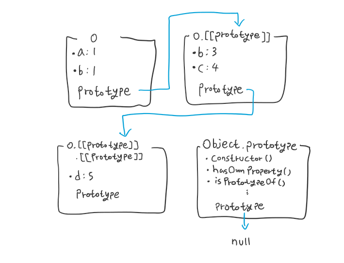

Prototype
서론
CS 스터디에서 7월 9일 발표한 Prototype에 대해 정리한 문서를 블로그에 공유하고자 한다.
prototype in Javascript
객체지향 프로그래밍 언어들에서 기존 코드를 확장하는 방식 중 대표적인 방식으로 상속(Inheritance)이 있습니다.
자바스크립트에서는 이러한 상속을 객체를 사용해 구현합니다.
프로토타입 체인
각 객체들은 프로토타입(prototype) 이라는 다른 객체에 대한 내부적인 링크를 갖고 있습니다. 그리고 그 프로토타입 객체는 또 다른 자체 프로토타입을 가지며, 프로토타입 체인이라 부르는 이러한 연결은 null을 프로토타입으로 가지는 객체에 도달할 때 까지 계속됩니다.
- 이
null은프로토타입 체인의 최종 링크 역할을 합니다.
프로토타입 체인을 이루는 객체 중 어떤 멤버든 변경할 수 있으며, 런타임에 프로토타입을 교체하는 것이 가능하므로 정적 디스패치(static dispatching)와 같은 개념은 자바스크립트에 존재하지 않습니다.
정적 디스패치(static dispatch): 다형성의 구현 방식 중 하나로,컴파일 시간에 어떤 메서드나 함수의 구현을 사용할 지 선택하는 방법입니다. 이에 대응되는 개념으로는런타임 시간에 이를 결정하는동적 디스패치(dynamic dispatch)가 있습니다.- C++의
template이 이러한 예이며, Rust 역시 아래와 같은 코드가 있다고 할때,컴파일러가 전달된 인자의 타입을 보고, 그에 맞는 코드를 따로 실행하게 됩니다.
- C++의
// rust의 trait은 타입 간의 공통된 사항들을 정의합니다.
// (Java의 Interface와 유사하지만 더 강력한 개념)
// 예를 들어, 아래 Speak이라는 trait을 가지는 타입은 반드시 speak 함수를 가져야 합니다.
trait Speak {
fn speak(&self);
}
struct Cat;
// Cat 타입에 Speak trait을 붙이는 코드입니다.
impl Speak for Cat {
// Speak trait에 포함된 'speak' 함수를 구현해야 합니다.
fn speak(&self) {
println!("Meow!");
}
}
// Speak trait을 갖는 타입을 인자로 받는 함수
fn talk<T: Speak>(pet: T) {
pet.speak();
}
fn main() {
let pet = Cat;
talk(pet);
}
코드 출처: Static dispatch - Wikipedia
프로퍼티 상속하기
자바스크립트의 객체는 자유롭게 프로퍼티를 추가 및 제거할 수 있는, property로 이뤄진 동적인 가방이라고 할 수 있습니다.
객체에서 프로퍼티를 탐색할 때는 현재 객체가 가진 프로퍼티(own property) 뿐만 아니라, 프로토타입 체인의 끝까지 탐색하며 이를 구성하는 프로토타입들에서도 찾는 형태로 동작합니다.
다음 코드는 후술할 프로토타입 접근 및 설정 방법 중 대표적인 방식인 obj.__proto__ 구문을 통해 객체의 프로토타입을 설정하고, 프로토타입 체인을 이루는 코드입니다.
const o = {
a: 1,
b: 2,
// __proto__ 프로퍼티를 통해 프로토타입을 설정합니다.
// 이때, 다른 객체 변수명을 할당하거나, 객체 리터럴을 할당할 수 있습니다.
__proto__: {
b: 3,
c: 4,
__proto__: {
d: 5,
},
},
};
// 이렇게 되면, 객체 o를 이루는 프로토타입 체인은 다음과 같습니다.
// { a: 1, b: 2 } ---> { b: 3, c: 4 } ---> { d: 5 } ---> Object.prototype ---> null
console.log(o.a); // 1
// o에는 내부 프로퍼티인 a가 존재하므로 해당 값을 가져옵니다.
console.log(o.b); // 2
// o와 o의 프로토타입 모두 b를 가지고 있습니다.
// 이러한 경우, 프로토타입 체인에서 더 가까운 위치에 존재하는 프로퍼티를 우선합니다.
// 즉, 여기서는 o의 내부 프로퍼티 b의 값인 2를 가져옵니다.
// 이처럼 프로토타입 체인 상에서 동일한 이름의 프로퍼티가 존재할 경우
// 프로토타입 체인에서 더 가까운 프로퍼티를 찾으면 이후 프토토타입들을 더 탐색하지 않는 것을
// 프로퍼티 섀도잉(Property Shadowing)이라고 합니다.
console.log(o.c); // 4
// o에는 c 프로퍼티가 없기 때문에, 프로토타입 체인을 탐색합니다.
// o.[[prototype]]에 c가 존재하기 때문에, 해당 값인 4를 가져옵니다.
console.log(o.e); // undefined
// o에는 e 프로퍼티가 없기 때문에, 프로토타입 체인을 탐색합니다.
// o.[[prototype]]을 탐색하나, 이 역시 e 프로퍼티가 없습니다.
// o.[[prototype]].[[prototype]]을 탐색하나, 이 역시 e 프로퍼티가 없습니다.
// o.[[prototype]].[[prototype]].[[prototype]], 즉 Object.prototype을 탐색하나, 이 역시 e 프로퍼티가 없습니다.
// Object.prototype의 프로토타입은 null이므로, 프로토타입 체인 탐색을 종료합니다.
// 프로퍼티를 찾지 못했기 때문에, undefined를 반환합니다.
위 구조를 그림으로 표현하면 아래와 같습니다.

메서드 상속하기
자바스크립트에서는 클래스-기반 언어들에 존재하는 메서드라는 개념이 존재하지 않으며, 대신 프로퍼티 형태로 객체에 함수를 추가할 수 있습니다.
이와 같은 방식으로 상속한 함수는 상기한 프로퍼티들의 동작방식 대로 동작하며, 마찬가지로 프로퍼티 섀도잉이 이뤄집니다.
유의할 점은, 상속된 함수가 실행될 경우 해당 함수 내부의 this 값은 해당 함수를 지닌 프로토타입 객체가 아닌 함수를 상속받은 객체 를 가리킵니다.
const parent = {
value: 1,
add() {
return this.value += 1;
}
}
const child = {
__proto__ : parent
}
parent.add(); // 2
parent.add(); // 3
child.add(); // 4
// child.add() 를 호출한 순간, 프로토타입 체인을 탐색하며 add 함수를 찾습니다.
// 그리고 add 함수 내부의 this는 child를 가리키게 됩니다.
// 이때, child는 value 프로퍼티를 갖고있지 않기 때문에, 프로토타입 체인을 탐색하며 value 프로터피를 찾습니다.
// 그리고 parent의 value 프로퍼티 값인 3을 가져와 1을 더하고, this.value에 할당합니다.
// 따라서 child 역시 내부 프로퍼티인 value를 갖게되며, 이 값은 4가 됩니다.
/ { value: 4, __proto__: { value: 3, add: [Function] } }
parent.add(); // 4
child.add(); // 5
// 앞선 child.add()로 child 역시 value 프로퍼티를 갖게 되었으므로
// child.value가 parent.value를 가리게되고(프로퍼티 섀도잉),
// child.value 값인 4에 1을 더한 5를 반환합니다.
생성자 함수(Constructor)
프로토타입을 활용한 생성자 함수 개선
또한 프로토타입은 객체를 생성하는 생성자 함수에서, 함수를 통해 생성된 인스턴스들이 가지는 프로퍼티를 지정하는데 사용할 수 있습니다.
value라는 값과 method라는 함수를 가지는 객체 여럿을 생성해야 한다고 합시다.
단순히 구현한다면 다음과 같이 구현할 수도 있습니다.
const boxes = [
{ value: 1, method() { return this.value; } },
{ value: 2, method() { return this.value; } },
{ value: 3, method() { return this.value; } },
];
이는 각 인스턴스 마다 동일한 작업을 수행하는 자체 함수 프로퍼티가 있는 형태로, 함수들이 중복되고 불필요한 형태입니다.
method 함수를 프로토타입으로 옮긴다면 어떨까요?
const boxPrototype = {
method() {
return this.value;
},
};
const boxes = [
{ value: 1, __proto__: boxPrototype },
{ value: 2, __proto__: boxPrototype },
{ value: 3, __proto__: boxPrototype },
];
이젠 모든 Box들이 똑같은 함수를 참조하므로, 중복이 없어지고 메모리를 덜 사용할 것입니다.
하지만 Box를 생성할 때 마다 __proto__를 직접 지정한다는 불편함은 계속 존재합니다.
이럴때, 생성자 함수를 만들고 해당 함수의 프로토타입에 method 함수를 추가한다면 더 간단화시킬 수 있습니다.
// 생성자 함수
function Box(value) {
this.value = value;
}
//Box() 생성자로 생성된 인스턴스들은 다음 프로퍼티를 갖습니다.
Box.prototype.method = function () {
return this.value;
};
const boxes = [new Box(1), new Box(2), new Box(3)];
생성자 함수로 생성된 모든 인스턴스들은 자동으로 생성자 함수의 prototype 프로퍼티를 프로토타입으로 갖습니다. 따라서 프로토타입에 존재하는 프로퍼티들을 공유하게 됩니다.
const box = new Box(1);
// 인스턴스들이 생성 된 후에도 Box.prototype를 수정해 동작을 변경할 수 있습니다.
Box.prototype.getValue = function () {
return this.value + 1;
};
box.method(); // 2
추가로 Constructor.prototype(Constructor는 생성자 함수, 여기서는 Box)는 모든 인스턴스들의 prototype과 동일한 객체를 참조하므로, Constructor.prototype을 수정해 해당 인스턴스들의 동작을 변경할 수도 있습니다.
- 다만 이러한 행위를 할 경우,
재할당 이전에 생성된 인스턴스들의 프로토타입과재할당 이후에 생성된 인스턴스들의 프로토타입이 다른 객체를 가리키게 되고,constructor프로퍼티를 명시적으로 재설정하지 않을 경우 인스턴스에서 이를 추적할 수 없게 되는 단점이 있어 권장되지 않습니다.
console.log(Box.prototype.constructor);
// ƒ Box(value) {
// this.value = value;
// }
console.log(Object.getOwnPropertyNames(Box.prototype);
// (2) ['constructor', 'method']
그리고 Constructor.prototype에는 생성자 함수 자체를 참조하는 constructor라는 프로퍼티가 존재합니다.
이를 통해 해당 생성자 함수로 생성된 모든 인스턴스에서 원래 생성자 함수를 접근할 수 있습니다.
주의사항
function WrongBox(value) {
this.value = value;
return {d: this.value};
}
WrongBox.prototype.method1 = function () {return this.value};
WrongBox.prototype.method2 = function () {return this.d};
const abcd = new WrongBox(10);
abcd.method1(); // TypeError: abcd.method1 is not a function
추가로, 생성자 함수가 원시 타입이 아닌 값을 반환할 경우, 해당 값이 new 표현식의 결과가 됩니다.
따라서 이러한 경우 prototype이 올바르게 바인딩 되지 않을 수 있습니다.
리터럴의 암시적 생성자
자바스크립트에서 몇몇 리터럴 구문은 인스턴스의 prototype을 암시적으로 설정해 생성합니다.
// 객체 리터럴(`__proto__` 프로퍼티를 기입하지 않은)은 자동으로 `Object.prototype`을 프로토타입으로 갖습니다.
const object = { a: 1 };
Object.getPrototypeOf(object) === Object.prototype; // true
// 배열 리터럴은 자동으로 `Array.prototype`을 프로토타입으로 갖습니다.
const array = [1, 2, 3];
Object.getPrototypeOf(array) === Array.prototype; // true
// 정규식 리터럴은 자동으로 `RegExp.prototype`을 프로토타입으로 갖습니다.
const regexp = /abc/;
Object.getPrototypeOf(regexp) === RegExp.prototype; // true
추가로, 일부 빌트-인 생성자의 prototype 프로퍼티는 그들 스스로의 인스턴스를 가리킵니다.
예를 들어 Number.prototype는 숫자 0을, Array.prototype은 빈 배열을, RegExp.prototype은 /(?:)/을 가리킵니다.
생성자 함수의 프로토타입 체인
생성자 함수로 생성된 인스턴스는 Constructor.prototype을 프로토타입으로 갖고, Constructor.prototype은 순수 객체이므로 다음과 같은 프로토타입 체인을 구성하게 됩니다.
function Constructor() {}
const obj = new Constructor();
// obj ---> Constructor.prototype ---> Object.prototype ---> null
만약 Constructor 함수의 프로토타입으로 다른 함수의 프로토타입을 연결한다면, 프로토타입 체인은 더 길어집니다. 이는 Class에서의 extends 구문와 유사합니다.
function Constructor() {}
function Extender() {}
Object.setPrototypeOf(Constructor.prototype, Extender.prototype);
const obj = new Constructor();
// obj ---> Constructor.prototype ---> Extender.prototype ---> Object.prototype ---> null
프로토타입 접근 및 설정
구문 생성자을 통한 객체 생성
const o = { a: 1; }
const p = { b: 2, __proto__: o };
// 위처럼 객체 리터럴 이니셜라이저에서 __proto__ 프로퍼티를 통해 프로토타입을 지정하는 방식이
// `Object.prototype.__proto__` 을 사용하는 것보다 표준화 및 최적화 되어있습니다.
중괄호({})로 묶인 프로퍼티 이름-값 쌍 목록인 객체 이니셜라이저에서 __proto__ 프로퍼티를 통해 프로토타입을 지정하는 방식입니다.
이때 __proto__ 프로퍼티가 객체가 아닌 값을 가리킬 경우 별도의 Exception 없이 프로토타입 연결에 실패합니다.
생성자 함수를 통한 객체 생성
function Graph() {
this.vertices = [];
this.edges = [];
}
Graph.prototype.addVertex = function (v) {
this.vertices.push(v);
};
const g = new Graph();
생성자 함수는 초기 자바스크립트부터 사용되었기 때문에 표준적이고, JIT 최적화가 가능하다는 장점이 있습니다.
하지만, 이 방식으로 추가된 메서드는 열거 가능(enumerable)하므로 클래스 구문 또는 빌트-인 메서드의 동작 방식과 일치하지 않아 정상 동작하지 않을 수 있습니다.
Object.create()를 통한 객체
const a = { a: 1 };
// a ---> Object.prototype ---> null
const b = Object.create(a);
// b ---> a ---> Object.prototype ---> null
console.log(b.a); // 1 (상속된 값)
const c = Object.create(b);
// c ---> b ---> a ---> Object.prototype ---> null
const d = Object.create(c, { abc: 10});
Object.create() 함수를 통해 객체를 생성할 경우, 해당 함수에 첫 번째로 넘겨진 인수가 생성된 객체의 프로토타입으로 지정됩니다.
참고로 두 번째 인자를 사용하면 생성될 새로운 객체의 각 속성 값을 정확히 지정할 수 있습니다.
- 이는
객체 리터럴에서 불가능한열거할 수 없는 프로퍼티생성을 할 수 있지만,객체 리터럴보다 오류가 발생하기 쉽고 느릴 수 있습니다.
클래스를 통한 객체 생성
class Rectangle {
constructor(height, width) {
this.name = "Rectangle";
this.height = height;
this.width = width;
}
}
class FilledRectangle extends Rectangle {
constructor(height, width, color) {
super(height, width);
this.name = "Filled rectangle";
this.color = color;
}
}
const filledRectangle = new FilledRectangle(5, 10, "blue");
// filledRectangle ---> FilledRectangle.prototype ---> Rectangle.prototype ---> Object.prototype ---> null
높은 가독성과 유지보수성을 제공하는 클래스 구조는 프로토타입 상속에서는 존재하지 않는 개인 속성(Private property)을 갖고 있지만, 전통적인 생성자 함수에 비해 덜 최적화 되어있고 ES6에 이르러서야 등장했기 때문에 이전 환경과 호환되지 않을 수 있습니다.
개인 속성(Private property): 접두어#로 시작하는 프로퍼티로, 클래스 외부에서 합법적으로 참조할 수 없는 프로퍼티입니다.
Object.set/getPrototypeOf()를 사용한 프로토타입 지정 및 접근
const obj = { a: 1 };
const anotherObj = { b: 2 };
// obj의 프로토타입을 anotherObj로 설정
Object.setPrototypeOf(obj, anotherObj);
// obj ---> anotherObj ---> Object.prototype ---> null
Object.getPrototypeOf(anotherObj) // {b: 2} << anotherObj
Object에 존재하는 정적 메서드인 setPrototypeOf(obj, prototype) 함수와 getPrototypeOf(obj) 함수를 통해 특정 객체의 프로토타입을 설정하거나, 가져올 수 있습니다.
대부분의 JS 엔진은 프로토타입을 동적으로 수정시 프로토타입 체인에 적용된 최적화가 중단될 수 있기 때문에, 가능한 생성 중에 프로토타입을 설정하는 것이 좋습니다.
__proto__ 접근자를 사용한 프로토타입 지정 및 접근
주의:
Object.prototype.__proto__는 표준이 아니며, 많은 JS 엔진에서 구현하고 있긴 하지만 Deprecated 되어있으므로setPrototypeOf또는getPrototypeOf를 사용하는 것이 권장됩니다. #
const obj = {};
obj.__proto__ = { barProp: "bar val" };
console.log(obj.__proto__); // {barProp: 'bar val'}
성능 관련
프로퍼티 순회 및 조회시 다음과 같이 동작하기 때문에, 성능을 고려해 코드를 작성하는게 좋습니다.
- 존재하지 않는 프로퍼티에 접근하려 하면 항상
프로토타입 체인전체를 순회하게 됩니다. - 객체의 프로퍼티들을 순회할 때, 모든
열거 가능한 프로퍼티들이 열거됩니다. - 프로퍼티를
전체 프로토타입 체인이 아닌,자체 프로퍼티에서 찾고 싶다면Object.hasOwn()메서드를 사용해야 합니다.(Object.prototype.hasOwnProperty가 아닌) null이 프로토타입으로 지정되어 있지 않고, 프로토타입 체인 아래로 재정의되지 않은 경우, 모든 객체는Object.prototype의hasOwnProperty()를 상속받습니다.
class와 prototype
자바스크립트에서 클래스가 구현되는 방식 역시 프로토타입 모델을 기반으로 하고 있으며, 클래스는 프로토타입을 추상화합니다.
즉, 기존에 존재하는 프로토타입-기반 상속의 문법적 설탕(Syntactical Sugar)이라고 할 수 있습니다. 다만, 클래스에서만 사용할 수 있는 구문도 존재하는데, static 프로퍼티 및 메서드, Private Property과 같은 문법이 바로 그것입니다.
class와 생성자 함수
또한 클래스와 생성자 함수 역시 종종 비교되는데, 클래스가 실제로는 런타임 시간에 생성자 함수로 동작하기 때문입니다.
심지어 prototype과 달리, 생성자 함수도 static 프로퍼티 및 메서드, Private Property를 가질 수 있습니다.
class Person {
// 클래스의 스태틱 메서드
static greetStatic() {
return 'Static hello!';
}
// 클래스의 프라이빗 프로퍼티와 해당 값을 접근하는 getter
#privateField = 20;
getField () {
return this.#privateField;
}
}
function FuncPerson() {
// 생성자 함수의 프라이빗 프로퍼티
var privateField = 20;
// 프라이빗 프로퍼티를 접근하는 getter
this.getField = function () { return privateField; }
}
// 생성자 함수의 스태틱 함수
FuncPerson.greetStatic = function () { return 'Static Hello!'; }
console.log(Person.greetStatic()); // "Static hello!"
console.log(FuncPerson.greetStatic()); // "Static hello!"
console.log(new Person().getField()); // 20
console.log(new FuncPerson().getField()) // 20
따라서 자바스크립트의 클래스는 생성자 함수와 프로토타입-기반 상속을 종합한 문법적 설탕이라 할 수 있습니다.
왜 Javascript는 프로토타입 기반(prototype-based)을 채택했을까?
결론부터 말하자면, Javascript는 Java의 보조 수단으로써 설계되었기 때문입니다.
넷스케이프에 재직하며, 브라우저인 넷스케이프 네비게이터에서 사용할 스크립트 언어를 개발을 맡은 브랜든 아이크는, Scheme 언어를 브라우저에 구현하라는 지시를 받았었습니다.
하지만 넷스케이프가 웹에서 Java를 구현하기 위해 썬 마이크로시스템즈와 계약을 체결하고, 이를 위한 언어인 자바스크립트(이전에는 Mocha -> LiveScript로 이름이 계속 바뀌었다.)를 개발하게 되었습니다.
따라서 Java에 존재하는 Class를 자바스크립트에 포함하는 것이 허용되지 않았고, 자바스크립트는 이를 대체할 객체 지향 모델이 필요했고 브랜든 아이크는 프로토타입 기반 상속을 구현했습니다.
이는 브랜든 아이크의 블로그에 등록된 글 내용에서도 확인할 수 있습니다.
넷스케이프 2, 3 시절에는
Javascript를 최소화하고,DOM을 구현하며 “진짜 프로그래밍"은 Java에 맡겨야 한다는 큰 압박을 받았습니다.
(during Netscape 2 and 3 days I was under great pressure to minimize JS-the-language, implement JS-the-DOM, and defer to Java for “real programming” )
(중략)
따라서Javascript를 최소화하기 위해, 명시적 프로토타입-기반 위임을 추가해 사용자가 단일 프로토타입 네임스페이스에서 빌트-인 메서드를 자신만의 메서드로 보완할 수 있도록 했습니다.
(Therefore in minimizing JS-the-language, I added explicit prototype-based delegation, allowing users to supplement built-in methods with their own in the same given single-prototype namespace.)
출처: JavaScript 1, 2, and in between – Brendan Eich